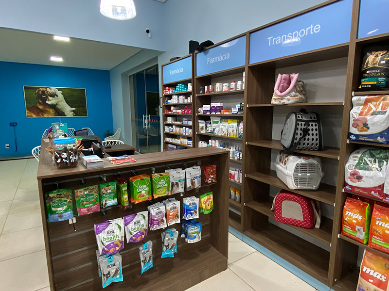

Sobre nós
Bem vindo ao Petshop da Belinha, aqui nossa história é tecida com 15 anos de dedicação ininterrupta e um amor profundo e incondicional por cada animal de estimação que cruza o nosso caminho. Desde a nossa fundação, somos movidos por uma paixão genuína, que se traduz em oferecer o que há de melhor em carinho, cuidado e produtos de excelência para a vibrante comunidade das cidades de Francisco Morato, Franco da Rocha e Mairiporã. A alma e o coração da nossa empresa é a proprietária, Isabel Oliveira. Com uma dedicação incansável e um olhar atento às necessidades dos bichinhos, Isabel transformou um sonho em realidade: criar um refúgio e um centro de bem-estar onde a saúde, a segurança e a felicidade dos pets fossem, indiscutivelmente, a prioridade máxima.
História da empresa
A trajetória do Petshop da Belinha começou há 15 anos com a visão de Isabel Oliveira. Em Francisco Morato, ela fundou o negócio com um propósito claro: ser um centro de excelência, oferecendo o melhor em produtos e serviços para garantir a saúde e a felicidade dos pets. Graças ao carinho e à confiança de nossos clientes, expandimos nosso sonho. Hoje, a família Belinha atende em três unidades: Franco da Rocha, Francisco Morato e Mariporã. Nestes 15 anos, evoluímos de uma loja local para uma referência regional. Somos mais do que um petshop; somos uma equipe apaixonada que cuida do seu melhor amigo com o mesmo amor que você. Nossa história é construída diariamente com dedicação, excelência e um compromisso inabalável com o bem-estar animal.
Isabel Oliveira
Por trás do sucesso e do carinho do Petshop da Belinha está a visão e a paixão de sua fundadora e proprietária, Isabel Oliveira. Isabel não é apenas a administradora do nosso negócio; ela é a alma e o coração que impulsiona cada serviço e cada produto que oferecemos. Há 15 anos, ela transformou seu profundo amor pelos animais em um empreendimento dedicado ao bem-estar pet, começando a jornada em Francisco Morato. Com uma dedicação incansável, Isabel Oliveira moldou a Belinha em um refúgio de confiança. Sua filosofia sempre foi clara: cuidar de cada pet como se fosse o seu próprio. Foi sua liderança que garantiu a expansão de nossos serviços de excelência para as unidades de Franco da Rocha e Mairiporã.